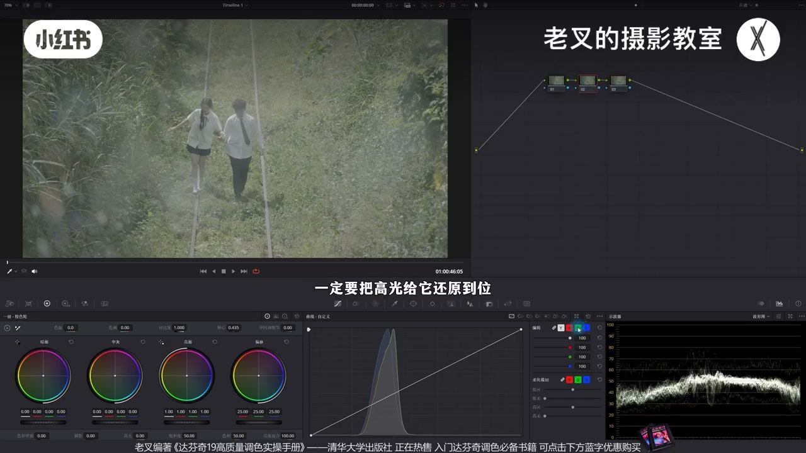
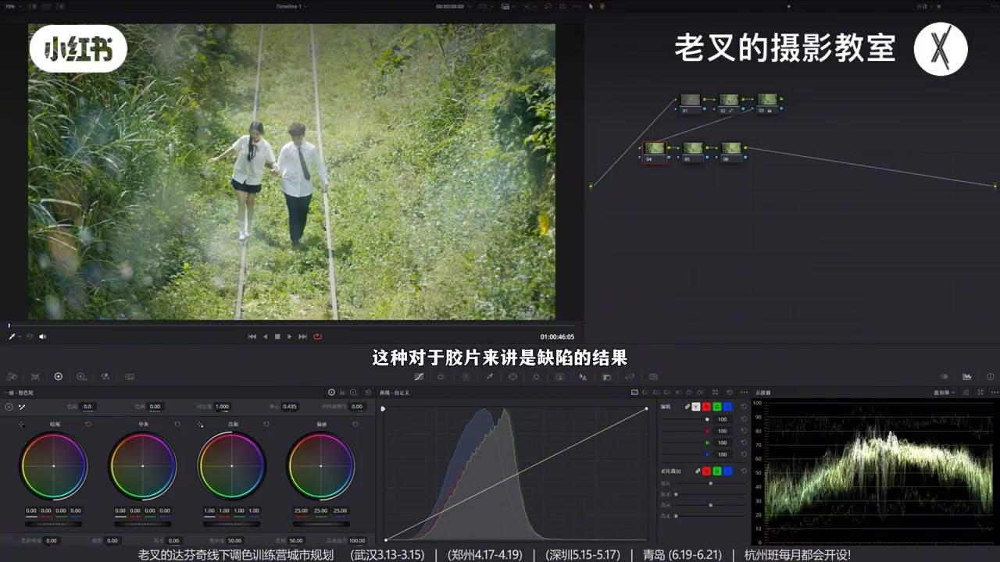
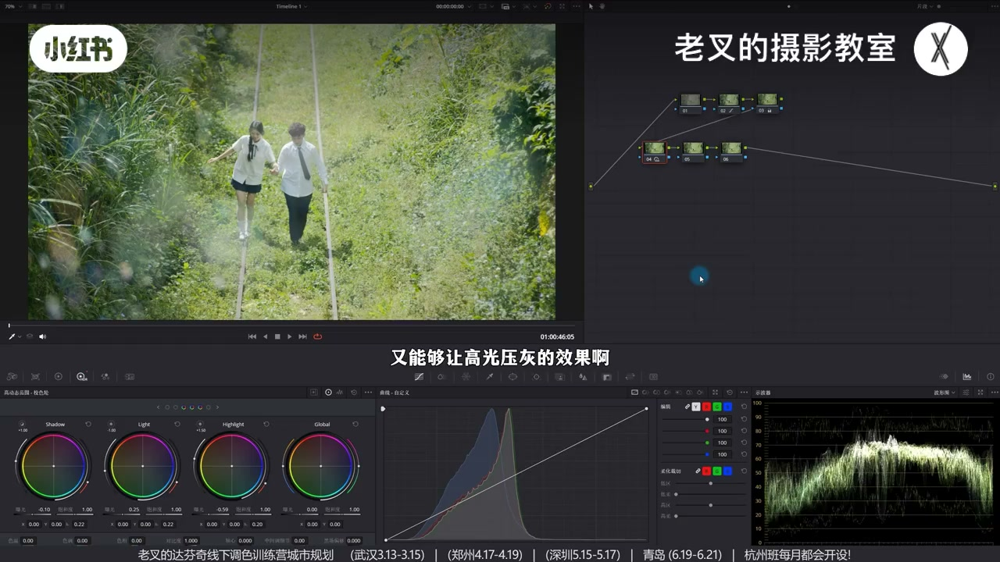
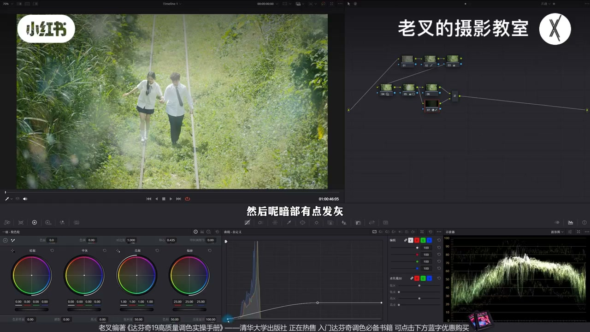
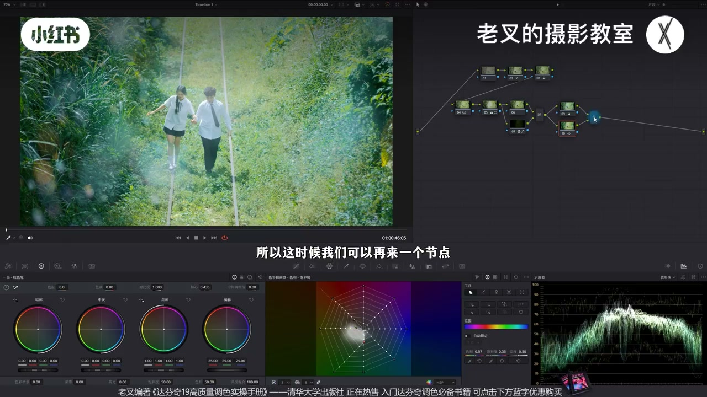
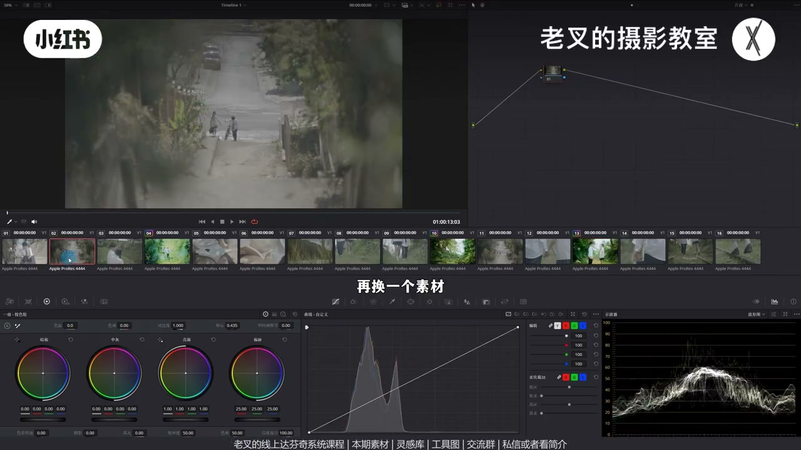

内容要点
老叉讲日系小清新两大核心：① 胶片宽容度缺陷当风格——整体提亮同时高光压灰（抬 Light、压 Highlight，可微压 Shadow）；② 颜色先整体加冷，并行纠肤与背光墨绿，再用较弱暖回调，形成「冷大于暖」的层次。前提是晴天蓝天白云；可加白柔与柔和对比度强化胶片感，节点可粘贴到多段再微调。
知识结构
须晴天；高光约90、暗约10；曲线全局降暗后记得纠回高光。
抬 Light、压 Highlight（可微压 Shadow）：提亮但不刺眼，仿胶片裁切发灰。
反转遮罩压四周；可选涂层白柔（柔光+高斯模糊+曲线控力）。
先降温再并行纠肤/墨绿；后节点弱回调暖（如−370 vs +170）。
柔和对比度加强高光/暗部发灰；粘贴到其他片段，偏暗偏暖回节点微调。
小清新＝亮而通透 + 高光压灰的胶片感 + 偏冷但受光仍舒服。先曝光后颜色；加冷浮色用并行纠回，力度不准就后节点打补丁，不必纠结一步精准。
00:00-00:56前提晴天：还原把高光做到位
小清新大前提是晴天、最好蓝天白云，否则很难出这种效果。风格第一反应是亮才通透：还原把高光拉到约90、暗部约10%。曲线是全局工具，降暗部后高光会收缩，记得再把高光纠正回去，并略加饱和。
人物受光面约90%即可，别过曝。还原后仍不够风格化，进入精细化。

00:56-02:36核心一：胶片宽容度 → 提亮且高光压灰
日系小清新常与胶片匹配。胶片记录最亮最暗的能力比数码窄，亮暗被裁切会发灰——缺陷在数码里成了风格。做法：保证整体提亮前提下让高光发灰。
第二排节点：略抬 Light 让中灰上行，再降 Highlight 收缩高光；暗部若受影响可微降 Shadow。脸被提亮，衣草受光面变灰，全局无刺眼亮面。

02:36-03:18主体最亮：反转遮罩压四周
主体应在最亮区；人物已最亮则只能压环境。画遮罩框人物后点反转，四周降阴影滑块，并略提高光滑块——要压就不能只压还得提。
两节点同开：中间人物区呈柔和的亮。

03:18-04:02可选白柔：涂层 + 高斯模糊
Alt/Option+L 建涂层节点，合成模式改柔光；下层拉高斯模糊强度拉满，再用曲线控柔化力度：高光适中、中间略提，暗端右移减轻发灰。
让中间受光面柔和浪漫；可加可不加。

04:02-06:14核心二：先冷后暖回调，冷大于暖
日系偏冷。Alt/Option+S 新节点降温后，肤色与受光草会「浮冷」难看——并行节点用向量把肤饱和找回，背光叶可靠墨绿并略加饱和。
受光草暖仍别扭时，后再加较弱暖。看似矛盾：前面让背光与整体带冷，两次色温力度不同（例：−370 对 +170），加冷大于加暖。一步做准可不回调；做不准后节点打补丁也行。

06:14-07:59柔和对比度强化胶片感；粘贴多片段
柔和对比度可再加强高光压灰，并让暗部略上提发灰。大方向对了，绿艳等细节自调。
同片其他片段可直接粘贴节点；偏暗回还原略提曝光，偏暖回色温节点再降温/略偏绿。素材免费领取，非商用可自用。

完整转录（310段）
以下文本由 Whisper medium 模型自动转录，可能存在少量识别误差，已尽可能修正。
这种小清新的风格要怎么调
你想要调出这种风格
你的画面得有个大前提
就是得是晴天
天空最好是蓝天白云的状态
否则你很难出这种效果
我们来看操作
小清新的风格
我们第一反应就是要亮
只有亮才能显得通透
所以我们在还原的时候要注意
一定要把高光给它还原到位
把高光拉到90左右
然后暗部给10%左右
要注意的是曲线是全局工具
所以我们在降低暗部曝光了之后
高光也会往下收缩
所以我们记得把高光给它再纠正回去
大概到这个程度
然后我们再给它加一点饱和度
还原到这就差不多了
你要注意的是
我们让它的高光也就最亮的部分
比如说人物这边的受光面
让它在90%左右就够了
也别太亮
你过曝了肯定是不舒服的
虽然我们还原好了
但是目前的结果还是不够风格化的
所以我们需要建立几个节点
我们要开始进行精细化的调整
小清新的风格最常见的前缀是什么
是日系对吧
而日系小清新风格出来的时候
大多数都是与胶片去做匹配的
胶片比起数码的区别之一
就在于它的宽容度
也就是记录最亮和最暗的能力是不同的
胶片能够记录的最亮和最暗的亮度
比起数码要小得多
所以就会出现
用胶片拍摄的结果
如果是亮与它能够记录的范围
或者是暗与它的范围的信息
会被裁切呈现出发灰的结果
这种对于胶片来讲是缺陷的
结果放到我们数码中
就成为我们风格的导向
那要怎么在打分级中实现呢
其实很简单
我们要保证画面整体提亮的前提下
高光发灰 对吧
所以我们可以在第二排第一个节点中
稍微提高点Light色轮的曝光
让它整体能够有往上走的一个趋势
对吧 亮一点
然后再降低Highlight色轮的曝光
好 大概到这个程度
我们先不看画面
我们只看波星图
整体在中灰部分
我们看中灰部分是不是往上去提了
对吧
但是高光部分它是收缩的
也就是说整体是稍微提亮的前提下
高光是压灰的
同时暗部也稍微受点影响
所以我们可以给Shadow色轮
稍微降低一点点曝光
让它暗部不要受太多的影响
那此时我们来看画面的变化
我们先放大看人物的脸
在调整前人物的脸是偏黑的
在调整后人物提亮了 对吧
但是我们稍微缩小一点
看这些受光面
不管是人物衣服上的受光面
还是地上的草的受光面
它都变灰了
那我们再缩小看全局的画面
此时画面中是不是没有那种
特别刺眼的亮面存在
就能够既满足提亮
又能够让高光压灰的效果
还没完
我们想要让主体更加突出
最好的方式就是把主体
放在最亮的那个区域 对吧
但是我们人物已经最亮了
所以我们想要让人物更突出
就只能让环境压暗
因为其实两侧的草
我觉得还是有点亮的
我们可以画一个遮罩
框选出人物
然后再点击遮罩右边第一个按钮
把这个制造的范围反转了
给其余部分
也就是四周
稍微降低点它们的曝光
我这里降低的是阴影滑块
还是那句话
要压就不能止压
你还得提亮
所以我们再稍微提高一点
高光滑块
那这样我们就小敷压了这四周
我们可以把这两个节点
一起开关来看一下
此时画面中就呈现出那种
柔和的亮 对不对
特别是中间这个人物区域
然后你也可以考虑
给画面加一点白柔
也就是在新建的这个节点中
按住 Alt 加 L
或者是 Option 加 L
建立一个涂层节点
把合成模式改成绿色
再给下面这个节点中
从特效库中搜索高斯模糊
把高斯模糊拉到下面这个节点中
拉上去了之后
把强度它的数值
如果说你的数值是两行的
那也一样
不管是几行的
你就把它数值给拉满了
拉满了之后
同样是在下面这个节点
我们可以用曲线工具
来调整它柔化的力度
高光我觉得到这里就差不多了
中间稍微往上提一点点
然后 Amp 有点发挥
我们可以把 Amp 这一端
给它往右边稍微拉一点过来
大概是这个效果
我们让中间受光面
能够产生这种柔和的
浪漫的效果
对吧
当然这个效果
你可加可不加
问题都不大
然后我们就可以来动颜色
日系小清新
就算我们不去找参考图
也能够显示出来
它整体是偏冷的
对吧
而我们的画面并不冷
也没什么风格化的颜色
所以我们可以按住 Alt 加 S
再建一个节点
给画面用色温
来给它加一点点冷
也就是向左移动点色温
此时确实变冷了
但是出现了一个问题
这个问题也是很多朋友
在全球染色中
会遇到的一个情况
加了冷之后
整个画面的颜色
就像浮在表面
非常不好看
这是因为我们加冷的行为
导致一些不该变冷的
比如说肤色
或者是这些受光面的草
它也变成冷色了
对吧
它们不该变冷的
所以这时候
我们就应该在9号节点中
按住 Alt 加 P
或者是 Option 加 P
建立一个并行节点
在并行节点中
我们可以利用蜘蛛网
来把肤色
它的饱和度
给它稍微找回来一点
大概是这个效果
我们看到脸上的
这个饱和度都回来了
这边的黄也可以再加一点
然后这些背光面的叶子
我就觉得它们
如果能走墨绿色的话
会更加舒服
所以我们也可以给它
稍微改一改色相
让它往墨绿色方向去靠一靠
稍微加一点饱和度
大概是这个意思
这样的调整
虽然说我们的颜色都有了
但是也不是特别好看
特别是这些受光面的草
它的暖不是很舒服
所以这时候
我们可以再来一个节点
非常有意思
再来一个节点之后
我们给画面再加回来一点点暖
大概到这个程度
此时你会发现
画面中整体有冷的效果
但这些暖
特别是这些受光面的草
又能够保持一个
相对舒服的状态
这样就能好看多了
这个时候会有朋友有疑问
为啥你前面在9号节点加了冷
又在12号节点把暖给加回来
这不是以前和矛盾了吗
有两个原因
第一个是前面加冷的行为
是为了让这些背光面的草
以及整体都能够带上一定的冷色调
第二个原因就是
两次改变色温的力度是不同的
前面9号节点我们是降了370
而12号节点是加了170
加冷要大于加暖的力度
如果说你在9和10号节点
能够一口气让颜色调到位
那自然不需要在后面
再来个节点回调色温
如果说你做不到
我们其实也不用太纠结
每一个调整力度的精准性
你其实再来个节点
打个小补丁问题也不大
对吧
最后我们可以再来个节点
来一个柔和对比度
我们可以把胶片的这种特性
也就是高光压灰的这种特性
让它做得再强一点
同时暗部也给它往上提
让暗部也能够有一点发灰的一个效果
好
大概是这个结果
此时我们看
画面整体的味道是不是就有了
就这种日系小星星的感觉
当然你说这个绿色太艳了
怎么怎么样
随便你调
这个是我们在调好了大方向之后
细节的调整你都可以自己来
那这个片子还有些别的片段
我都传到了现场分享平台
大家如果有需要的话
想练习
或者说你想剪一剪小片段之类的
你都可以自行下载
这是免费的
对于这个画面来讲
如果说你的思路调整的比较清晰的话
你直接粘贴效果也不错
比如说我们给这个画面吧
我们直接一粘
对吧
这种动漫的感觉是不是挺好的
那换个素材
比如说这个
直接一粘
这个梦幻的感觉也挺好
他们俩这么浪漫的感觉都有的
对吧
再换一个素材
比如说这个我们也直接一粘
这个就出现了一点问题
有两个问题
第一个就是它比起我们其他几个片段
都有一点偏暗
对吧
那我们就回到2号节点
我们在2号节点给它做还原
把它的曝光稍微提高一点上来
也不用提太多
差不多这个力度就行了
然后第二个问题就是整体有点偏暖
我们希望整体是走冷掉的话
我们就回到12号节点
我们在12号节点之前是给它回调了色温
对吧
这里我们就给它把色温给它降回去
也可以给它稍微减一点色调
让它往绿色方向走一点
再减点色温吧
那这样的一个结果也不错
对不对
这种味道也挺好的
当然力度你可以自己把控
这些片段大家领取过去之后练习练习
你只要不商用的话
这些素材你想干嘛都可以
传到自己的社交平台也没问题
剪到这里
如果觉得对你有帮助的话
还希望多多赞联
好了
这期就到这里
886